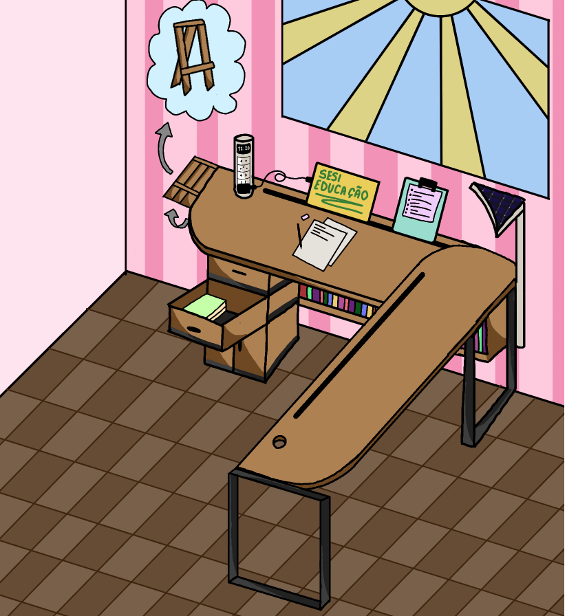
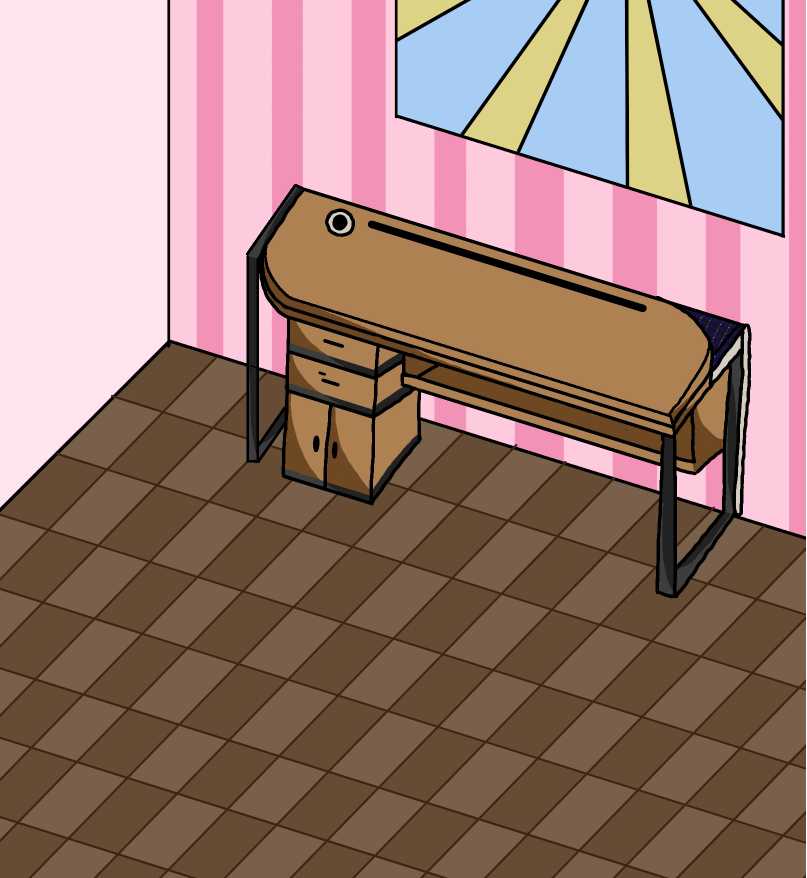

01
Otimização de espaço
Várias funções ficam integradas à própria mesa, ajudando a aproveitar melhor cada metro quadrado.
Uma proposta de mobiliário multifuncional criada para aproveitar melhor espaços pequenos, reunindo estudo, trabalho e lazer em uma única peça.

A mesa foi pensada principalmente para estudantes e pessoas que vivem em quitinetes e apartamentos, mas pode acompanhar qualquer rotina que precise de um móvel compacto e versátil.
Várias funções ficam integradas à própria mesa, ajudando a aproveitar melhor cada metro quadrado.
Livro, tablet, planilhas, equipamentos e materiais podem ficar organizados em uma estação única.
Quando a rotina muda, a mesma superfície pode ser usada para jogar, criar ou realizar outras atividades.
A mesa reúne mecanismos e espaços de apoio que aparecem somente quando são necessários. Assim, a peça consegue atender diferentes tarefas sem exigir uma área grande.
A segunda vista mostra a mesa recolhida, reforçando a proposta de guardar os recursos e liberar espaço quando eles não estão sendo utilizados.

O conceito combina uma estrutura de inspiração moveleira com componentes retráteis para transformar a mesa conforme a atividade.
O desenvolvimento considera o uso do móvel, a distribuição dos espaços e uma estética coerente com a indústria moveleira.
O projeto parte de uma necessidade real: criar uma estação que possa mudar de função sem exigir um cômodo exclusivo. Por isso, os componentes são incorporados à estrutura da própria mesa.
Otimizar espaços pequenos para quem precisa estudar, trabalhar ou ter lazer em casa.
Definição de uma mesa compacta com recursos retráteis e áreas de armazenamento.
Integração da tomada, iluminação, apoios, livros, tablet e estrutura de apoio.
Comunicação do produto de forma visual, clara e objetiva para o projeto Rakatin.
Embora o foco inicial seja o público que vive em espaços compactos, a proposta pode acompanhar diferentes estilos de uso.
Livros, tablet, planilhas, tomada e iluminação reunidos em um espaço de estudo.
Uma estação compacta para notebook, documentos, organização e tarefas do dia.
Uma superfície versátil que pode se adaptar a momentos de entretenimento.
Uma proposta de mobiliário multifuncional para transformar poucos metros quadrados em um ambiente mais versátil, organizado e útil.
Voltar ao início